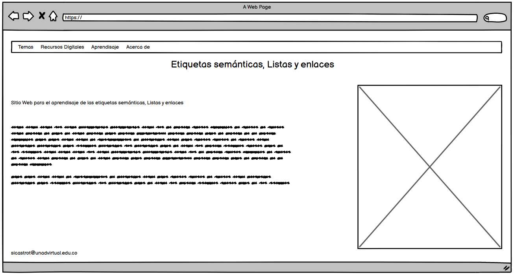

Contenido etiquetas semánticas, Listas y enlaces
Etiquetas Semanticas
Las etiquetas Semánticas en HTML5 vienen a remplazar las antiguas
etiquetas "div" creando un estándar para separar las Cabeceras,
Pie de Página, Navegación, Sección, artículos.
A continuación se enumeran las etiquetas semánticas.
1. (header /header) = Cabecera
2. (footer) (/footer) = Pie de Pagina
3. (nav) (/nav) = Menu
4. (section) (/section) = Seccion
5. (aside) (/aside) = Contenido
6. (article) (/article) = Noticias
El objetivo principal de realizar este cambio es crear una estructura
de páginas más legibles y organizadas, remplazando la forma excesiva en
que se utilizaban las etiquetas (div)(/div)
Ainoa Celaya Luna, (2015). Creación de Páginas Web : HTML5. Icbeditores. https://elibro-net.bibliotecavirtual.unad.edu.co/es/ereader/unad/56045
Listas
Las listas son utilizadas para organizar listas de elementos en conjuntos las
listas se definen como Ordenadas, desordenadas y definiciones.
• Ordenadas = Muestra los elementos en una lista de forma ordenada ejemplo :
- Julio
- Carmen
- Ignacio
- Elena
• Desordenadas = Muestra los elementos en una lista ejemplo:
- FC. Barcelona
- Real Madrid
- Real Betis
- Atletico de Madrid
• Definiciones = Muestra los elementos con un valor y una definición ejemplo :
- Pizpireta
- Dicho de una mujer: Viva, pronta y aguda.
- Pulular
- Dicho de las personas, animales o cosas: Abundar y bullir en un lugar.
- Concupiscencia
- En la moral católica, deseo de bienes terrenos y, en especial, apetito desordenado de placeres deshonestos.
Tutorial HTML, Listas HTML, consultada el 08/03/2021, http://www.manualweb.net/html/listas-html/
Enlaces
Los enlaces funcionan como un conector entre diferentes documentos o paginas HTML
la sintaxis para el uso de enlaces es :
o (a href="URI")Contenido del enlace(/a)
Tutorial HTML, Enlaces HTML, consultada el 08/03/2021 http://www.manualweb.net/html/enlaces-html/

